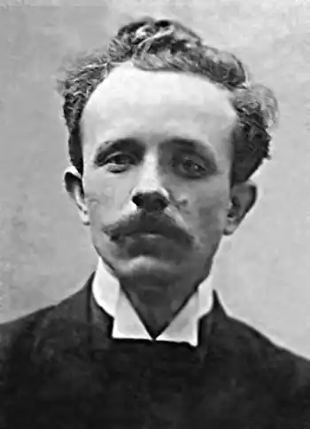

Пахаревський Леонід Андрійович (* 16 (4) вересня 1883, с. Щербашинці Богуславський район Київська область — † 1938?) — український письменник, актор, режисер, драматург, журналіст. Випускник Музично-драматичної школи М. Лисенка. Перекладав українською мовою твори Г. Гауптмана, А. Шніцлера, К. Гамсуна.
Емігрант у РСФСР (з 1929).
Жертва російсько-большевицького терору. Навчання і театр Закінчив музично-драматичну школу М. Лисенка і Київський університет. До школи ім. М. Лисенка вступив 1895 року. Під час навчання разом з дружиною В. Валєрик грав в аматорських трупах. У 1904 році разом з К.Стеценком очолив драматичний гурток новозбудованого лук'янівського народного будинку, практично перетворивши цей гурток на міцний робітничий аматорський театр. 7 листопада 1907 року Леонід дебютував в Театрі Миколи Садовського під сценічним псевдонімом "Л. Свірговський". Це був дебют випускного класу української драми школи ім. Лисенка (клас М. Старицької). По п'єсі "Сто тисяч" був поставлений жарт Антона Чехова "Освідчини" (переклад К. Лоського). Ролі грали Л. Свірговський, його дружина В. Валєрик і Ю. Лисенко. Після закінчення Київського університету Леонід в пошуках роботи разом з дружиною і дворічним сином поїхав у Мітану. Там він отримав посаду викладача російської мови. Оскільки без театру подружжя не уявляло собі життя, Леонід організував у клубі драматичний гурток, де вистави ішли російською мовою. Знайшлися здібні вихованці і робота закипіла. Ставили Чехова, Островського, Тургенєва, Ібсена, Гауптмана та ін. У Мітані вони прожили чотири роки, поки не почалась війна. Довелось евакуюватись спочатку до Риги, а потім в Україну до родичів. Актор Прохор Коваленко згадував про його молоді роки, коли Леонід також був актором: "Пахаревський виявився дуже обдарованою людиною: уміло режисерував, дуже добре виконував комедійні й драматичні ролі." Відомо, що влітку 1917 році Л. Пахаревський брав участь у дуже успішних гастролях трупи членів київського товариства "Просвіта" під орудою Івана Мар'яненка у Воронежі і Полтаві разом з своєю дружиною, а також такими акторами як Н. Дорошенко, О. Потапенко, І. Стешенко. Літературна діяльність Друкуватися почав 1905 року. У його найкращих оповіданнях, опублікованих у 1910-і роки ("Чужий", "Дівчина", "Над Дунаєм", "Батько"), звучить протест проти міщанського існування й покірності, заклик до боротьби за краще життя. Автор збірок малої прози "Буденні оповідання" (1910), "Оповідання" (1913), збірки віршів "Пожовкле листя" (1911), п'єс "Нехай живе життя!" (1907), "Тоді, як липи цвіли" (1914). Писав під літературними псевдонімами: Г. Одинець, Л. Чулий, Л. Свірговський, К. Lapidus. Співробітничав з альманахами "Розвага" (1908), "Терновий Вінок" (1908), газетами "Рада" (1906—1914), "Рідний Край" (1905—1914), "Сніп", щомісячниками, серед яких — "Світло" (1910—1914). Перекладав українською мовою твори Г. Гауптмана, А. Шніцлера, К. Гамсуна, Є. Чирикова. На окрему увагу заслуговує його переклад роману "Плющ" італійської письменниці Ґрації Деледда, опублікований спершу в "Літературно-науковому вістнику" за 1909 р., а потім окремим виданням (Київ, 1912). П'єсу російського драматурга Є. Чирикова "Євреї" Пахаревський переклав для репертуару Театру Миколи Садовського. П'єса входила до плану "європеїзації" українського театру. Нею мав відкритися перший київський сезон театру Садовського, але через заборону поліції із-за гостроти сюжету вистава за цією п'єсою відбулася дещо пізніше. Поезія Леоніда Пахаревського надихнула Кирила Григоровича Стеценка на створення хорових композицій, найвідомішою серед яких є пісня "Червоная калинонька" для хору в супроводі фортепіано. Педагогічна діяльність У 1920-х Леонід Пахаревський викладав на Київських педагогічних курсах імені Грінченка, де тоді працювало багато знаних людей, зокрема К. С. Шило — чоловік доньки М. В. Лисенка. Тоді ж Леонід Андрійович працює директором і одночасно викладачем історії у київській школі № 50. Випускник цієї школи професор Анатолій Петрович Пелещук (навчався в 1923—1926) — фундатор київської терапевтичної науки другої половини XX ст. — перебуваючи у Празі на Всесвітньому з'їзді терапевтів, незважаючи на велику завантаженість, з величезними труднощами знайшов на Огоманському цвинтарі могилу Олександра Олеся, та, вклоняючись його праху, із вдячністю згадував директора школи Л. А. Пахаревського. Під час репресій На початку 1920-х його шлюб з В. Валерик розпався. З кінця 1920-х років він жив у Москві, переховуючись від тотального більшовицького "полювання на відьом" серед представників української інтелігенції. Там вдруге був одружений. Мав дочку. Їхня подальша доля невідома, а ось В. Валерик у 1970 році дала інтерв'ю зі спогадами про нього. Леонід Андрійович "був репресований десь року 1937. Засланий на північ, він не витримав суворих кліматичних та побутових умов". Помер на засланні. Дата смерті невідома. За різними версіями помер у 1938 або в 1943 році.